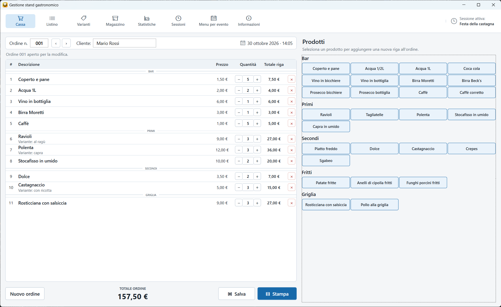
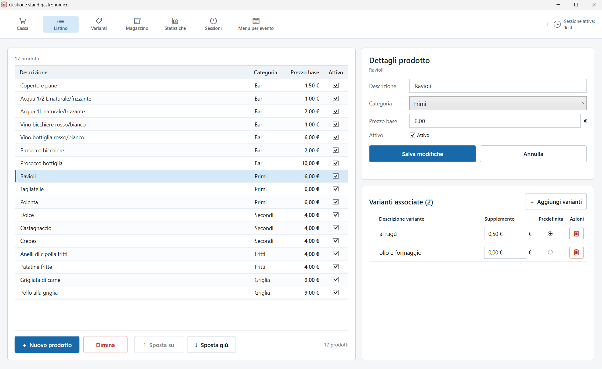
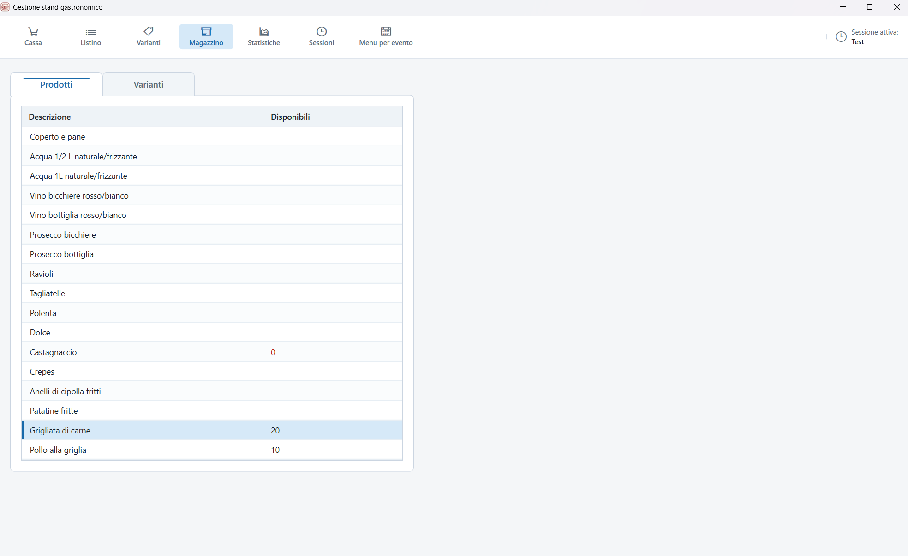
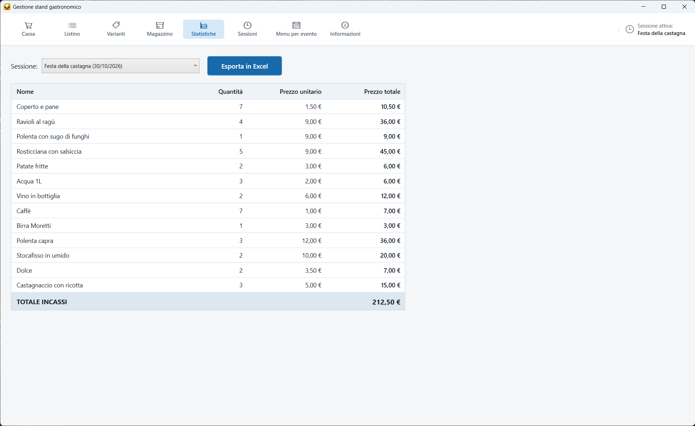

Cassa e ordini
Crea, modifica, salva e stampa gli ordini in modo rapido.
Il gestionale gratuito e offline per organizzare sagre, feste paesane ed eventi gastronomici su Windows.

Crea, modifica, salva e stampa gli ordini in modo rapido.
Organizza prodotti, prezzi, supplementi e preparazioni alternative.
Controlla le porzioni disponibili e impedisci vendite oltre la disponibilità.
Consulta vendite e incassi, poi esporta i dati in Excel.
Gestisci i turni di servizio e mantieni separati gli ordini.
Salva e richiama configurazioni diverse per ogni festa o periodo.
C:\StandGastronomico.Puoi modificare le etichette delle cinque categorie e il layout della stampa degli ordini senza ricompilare il programma.
Guida alla configurazione · Template di stampa · Guida utente PDF



I dati degli ordini rimangono sul tuo computer. Per domande, problemi o suggerimenti puoi usare Issues e Discussions su GitHub.